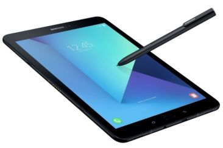
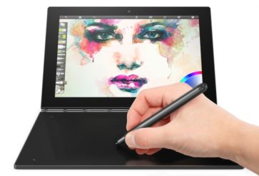
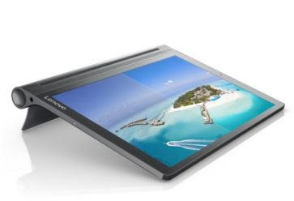
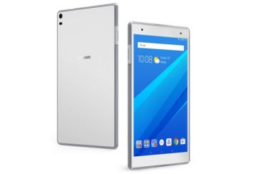
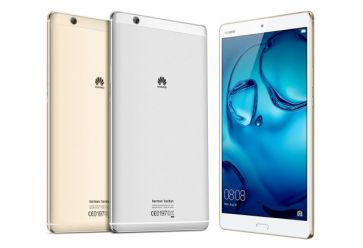

Tablety
Jaki jest najlepszy tablet? Oto lista 10 modeli, które wyróżniają się wydajnością, funkcjonalnością, jakością wykonania lub unikalnymi rozwiązaniami.
Godne uwagi modele z Google Android, Apple iOS oraz Windows 10.
1. Samsung Galaxy Tab S3 Wi-Fi
Zaprezentowany na targach MWC 2017, Samsung Galaxy Tab S3 Wi-Fi to topowy obecnie tablet koreańskiego producenta.
Podobać może się tutaj nie tylko nienaganna stylistyka, ale także ekran Super AMOLED, którego przekątna wynosi 9,7”, a rozdzielczość 2048 x 1536 pikseli.
Tym bardziej, że można obsługiwać go nie tylko dłonią, ale i rysikiem S Pen.
Przy procesorze Qualcomm Snapdragon 820 i 4 GB pamięci RAM mało kto narzekać będzie na wydajność, tablet wyposażony jest też w czytnik linii papilarnych,
baterię 6000 mAh i 4 głośniki stereo AKG. Urządzenie pracuje pod kontrolą Androida 7.0.
2. Lenovo Yoga Book
Lenovo Yoga Book (Android) to tablet hybrydowy, a jednocześnie jedna z najciekawszych tego typu propozycji w ostatnich latach.
Mamy tutaj do czynienia z dotykowym ekranem o przekątnej 10,1 cala, ale zamiast klasycznej klawiatury producent zdecydował się zastosować duży touchpad.
Obsługiwać można go rysikiem Wacom, a także wyświetlić na nim wirtualną klawiaturę, co znacząco rozszerza funkcjonalność urządzenia.
Tym bardziej, że procesor Intel Atom x5-Z8550 i 4 GB RAM zapewniają dużą wydajność. W zestawieniu zamieszczamy wersję z systemem Android,
w sprzedaży dostępna jest jednak także druga, już z Windows 10.
3. Lenovo Yoga TAB 3 Plus
Lenovo Yoga TAB 3 Plus (ZA1R0014PL) to przedstawiciel dobrze znanej serii tabletów, model bez wątpienia wart uwagi.
Pod względem ergonomii wypada doskonale, mamy tutaj charakterystyczną podstawkę pozwalającą ustawiać urządzenie w różnych pozycjach
(4 tryby pracy - połóż, postaw, trzymaj w dłoni i powieś).
Bardzo dobrze wypada też wyświetlacz, rozdzielczość 2560 x 1600 pikseli wspierana technologią Color Enhance przekłada się na bardzo szczegółowy obraz.
Producent zastosował baterię o pojemności aż 9300 mAh oraz 4 głośniki JBL z Dolby Atmos.
Wewnątrz obudowy mamy też dość wydajny procesor Qualcomm Snapdragon 652 i solidny aparat tylny.
4. Lenovo TAB 4 8 Plus LTE
Lenovo TAB 4 8 Plus LTE oferuje wyświetlacz o przekątnej 8 cali co przekłada się na bardzo wysoką mobilność urządzenia,
przy rozdzielczości 1920x1200 nie można narzekać na jakość prezentowanego obrazu. Lenovo TAB 4 8 Plus LTE pracuje pod kontrolą systemu Android 7.0 Nougat,
przy procesorze Qualcomm Snapdragon 625 i 3 GB pamięci RAM cieszyć można się płynną pracą, a także komfortową zabawą z większością mobilnych gier.
Producent zadbał o dość solidną baterię 4850 mAh oraz złącze USB typu C.
5. Huawei MediaPad M3
Nienaganna stylistyka to cecha także Huawei MediaPad M3 z obudową wykonaną z aluminium lotniczego.
Uwagę zwracają tu głośniki stereo, nad którymi producent pracował wspólnie z AKG. Huawei MediaPad M3 to konstrukcja bardzo poręczna, ekran mierzy 8,4 cala,
a mimo to oferuje świetną rozdzielczość 2560 x 1600 pikseli. Ośmiordzeniowy procesor HiSilicon Kirin 950 wspólnie z 4 GB pamięci RAM zapewnia dobrą wydajność,
znalazło się nawet miejsce dla czytnika linii papilarnych.